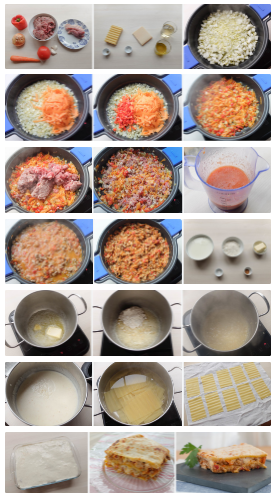

Receta Lasagna

Descriptions
La lasaña (en italiano, lasagna) es un tipo de pasta. Se suele servir en láminas
superpuestas intercaladas con capas de ingredientes
al gusto, más frecuentemente carne (ragú) en salsa boloñesa y
bechamel. Su origen es italiano y el plato preparado
usualmente con carne suele llamarse lasaña al horno.
La palabra «lasaña» proviene del griego lasanon, a través del latín lasănum, que se
refiere al pote en el que se cocinaba. La palabra
singular en italiano es lasagna y en plural lasagne se aplica
indistintamente al plato o a la pasta en forma de láminas.
Es una entrada o primer plato caliente que se suele
comer en invierno o en los periodos fríos de la primavera.
Ingredientes
Para el relleno (boloñesa de carne):
- 500 g. de carne (una mezcla de cerdo y ternera)
- 2 pimientos rojos
- 2 zanahorias
- 2 dientes de ajo
- 150 g. de bacon o panceta
- 2 cebollas grandes
- 250 g. de tomate natural (1 vaso aproximadamente)
- 250 ml de vino blanco (200 ml. aproximadamente)
- 100 ml. de aceite de oliva virgen extra
- 1 cucharita colmada de orégano seco (o hierbas provenzales)
- Sal y pimienta negra recién molida (al gusto de cada casa)
Para la lasaña:
- 12 láminas de lasaña o lasagna Garofalo
Para hacer la bechamel:
- (para un litro más o menos, la suficiente para la lasaña):
125 g de harina de trigo de todo uso
- 125 g de mantequilla
- 1 litro de leche entera
- Una pizca de nuez moscada (unos 4 g.)
- Sal y pimienta negra recién molida (al gusto de cada casa)
Para finalizar y gratinar la lasaña:
- 100-120 g. de queso rallado Grana Padano
(o mezcla con vuestro queso preferido para gratinar)
Preparado
- Calentamos una cazuela grande de agua, la más ancha de casa.
Cuando empiece a hervir echamos 2 puñados generosos de sal.
- Introducimos las láminas de lasaña una a una sin que se toquen
(para que no se peguen entre ellas).
Ahora podemos encontrar infinidad de tipos de lasaña donde no hace
hidratarla como se hacía antes. En casa muchas veces para ahorrar tiempo
empleo las que se hidratan con la bechamel y el jugo que suelta la salsa al hornear.
- Si lo hacéis de la manera tradicional tenemos que remover con una cuchara de madera y en unos 10 minutos sacamos las láminas.
Las estiramos encima de unas hojas de papel absorbente de cocina.
Aunque os parezca que no están, acabarán haciéndose en el horno.
- El siguiente paso será lavar muy bien todas las verduras que vamos a emplear en el
relleno.En la receta os aconsejo el relleno de la clásica salsa boloñesa,
zanahorias, ajo, pimientos y cebolla.
Como Preparar el relleno de la lasaña de carne
- Las verduras las cortamos en trocitos pequeños para que se junten bien en la salsa.
Las zanahorias las cortamos lo más fino posible.
Os recomiendo laminarlas con el pelador de las patatas porque
a la hora de pocharlas si las tiras son gruesas
no se hacen. Reservamos todo en un bol.
- En otra cazuela echamos aceite de oliva virgen extra. Empezamos introduciendo pochando
la cebolla y el ajo, cuando esté doradita, añadimos el resto de ingredientes.
- Sofreímos todo a temperatura media durante unos 15 minutos y esperamos por la carne.
Salpimentamos la carne al gusto y la echamos a la cazuela con la verdura. Dejamos
que se pase durante 5 minutos y cuando veamos que va cambiando de color introducimos
el bacon o panceta en trozos muy pequeños. Vertemos un vaso de
vino blanco y esperamos a que reduzca (otros 5 minutos a fuego medio).
- Añadimos un vaso de tomate natural, echamos la cucharadita de orégano y rectificamos
de sal y pimienta si hiciese
falta (probad la salsa para ver si está a vuestro gusto). Removemos
la carne con las verduras y retiramos del fuego, dejamos enfriar un poco.
Precalentamos el horno a 200º C durante 15 minutos, lo justo
para hacer el resto de la lasaña.
